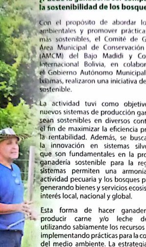
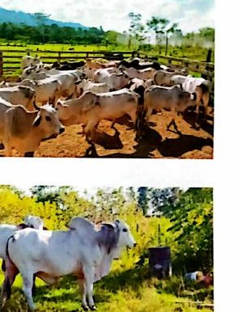
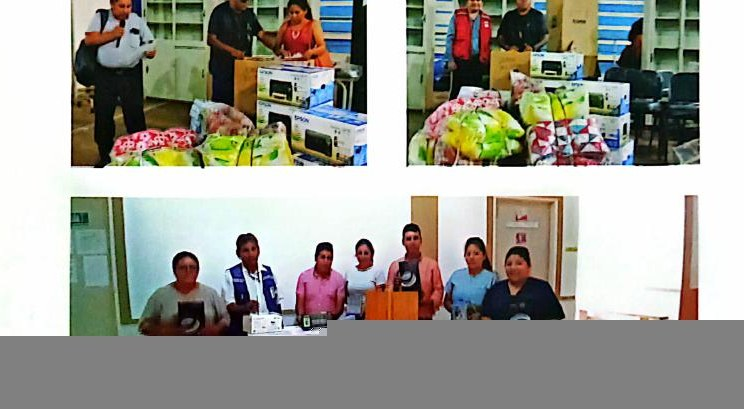
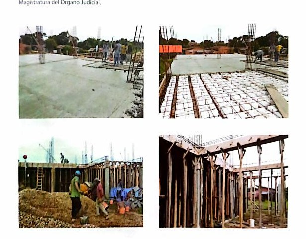
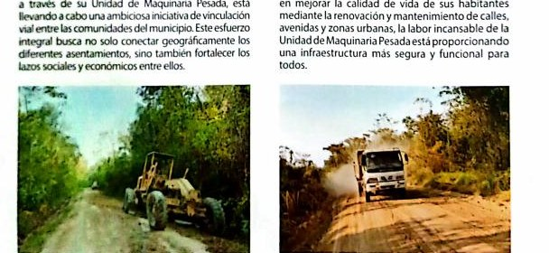
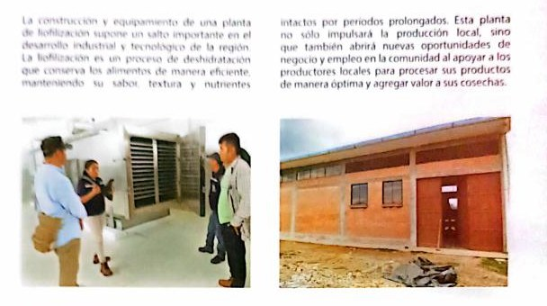
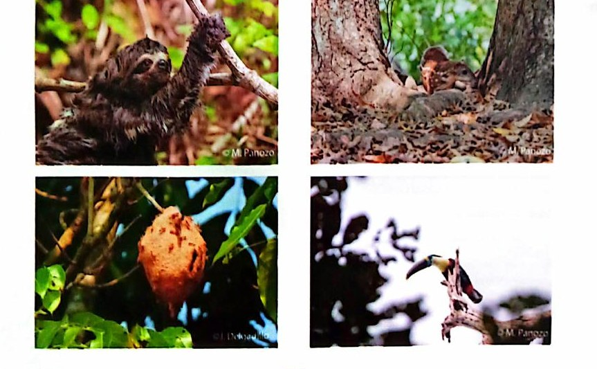

Ganadería sostenible
Mejores prácticas productivas, manejo responsable y reducción de impactos sobre el bosque.
Producción, salud, educación, infraestructura, conectividad, saneamiento, gestión de riesgos y obras municipales.
Contenido organizado por áreas para comunicar acciones municipales de manera clara y profesional.

Mejores prácticas productivas, manejo responsable y reducción de impactos sobre el bosque.

Acciones orientadas a fortalecer la producción de ganado bovino y la seguridad alimentaria.
Apoyo a arroz, maíz, cacao, cítricos, semillas, maquinaria, convenios agrícolas y transformación productiva.

Gestión de servicios, personal y atención en establecimientos municipales, según disponibilidad institucional.

Infraestructura educativa, equipamiento, materiales, instrumentos y apoyo a unidades educativas.

Enlosetado, mantenimiento de calles, avenidas, caminos rurales y apoyo con maquinaria pesada.

Proyecto para agregar valor a productos locales mediante transformación y conservación de alimentos.

Radio bases y conectividad rural como herramientas para educación, producción, salud y comunicación.

Obras de saneamiento básico para mejorar condiciones de salud pública y calidad de vida.
Apoyo municipal frente a emergencias ambientales, sequía e incendios forestales, con coordinación interinstitucional.
Herramienta útil para información climática, planificación productiva, alerta temprana y gestión de riesgos.
La gestión municipal debe equilibrar producción, servicios, obras, conservación ambiental y bienestar social.